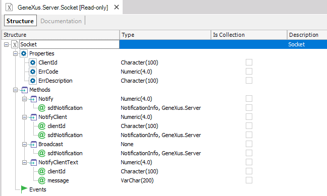
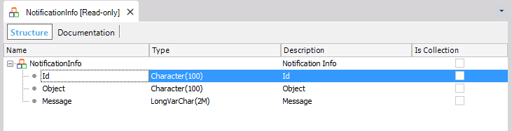

The purpose of using Sockets is to allow executing actions in real time so that the server sends content to the browser without being solicited by the client, and vice-versa.
Therefore, the user doesn't need to refresh the web browser or the app (the clients) to get the information in real time. For example online chat/messaging systems and monitoring consoles.
To use Sockets in web, you must configure the Web User Experience property to "Smooth".
The Server.Socket API consists of the Server.Socket external object and the NotificationInfo SDT.
An external object called Server.Socket exposes all the methods and properties needed for this functionality.

| Method | Description | Most common use case |
| Server.Socket.Notify(NotificationInfo sdtNotification): Numeric | Send a notification to the user who originated the action. It is valid during the entire session. | Give feedback to a user when a submitted procedure has finished - if the submit action has been executed from the user's session. |
| Server.Socket.NotifyClient(String clientId, NotificationInfo sdtNotification ): Numeric | Send a notification to a given user. | To implement a chat, only some users will receive the notification. |
| Server.Socket.Broadcast(NotificationInfo sdtNotification) | Send a notification to all connected users. | To send an alert to all users. |
| Server.Socket.NotifyClientText(String clientId, String Message ): Numeric | Send a "raw" message to a specific client. |
| Server.Socket.ClientId: String | Get the ClientId of the current session. |
| ErrCode | Error Code |
| ErrDescription | Error Message |
| 0 | OK |
| 1 | Could not start WebSocket Server |
| 2 | WebSocket Session not found |
| 3 | WebSocket Session is closed or invalid |
| 4 | Message could not be delivered to client |
The NotificationInfo SDT is provided to specify the notification information that will be sent to the above methods (Notify, NotifyClient, BroadCast) of the Socket.Server external object.

| Id | By identifying the notification, the developer is able to specify which control has to capture it. |
| Object | By specifying this property, the developer can determine which object has to listen to this notification (especially in case of Broadcast) |
| Message | Message of the notification. |
Suppose that you are implementing a messaging system where you need to notify any post made by a user. In this case, we load the NotificationInfo SDT with the data of the post message. Next, we use the Server.Socket external object to broadcast the message.
//&NotificationInfo is NotificationInfo SDT data type. &PostId is the identifier of the post. &NotificationInfo.Id=&PostId.ToString() //The following is an SDT where data to be notified is loaded. You can send any data because it is sent in json format. First load an SDT with this data. &commentNotificationInfo.PostId = &PostId &commentNotificationInfo.PostCommentContent = &PostCommentContent //Now assign the data to be sent to the NotificationInfo SDT in json format. &NotificationInfo.Message=&commentNotificationInfo.ToJson() &socket.Broadcast(&NotificationInfo) //&socket is Server.Socket external object data type
In the web object that will receive the notification, use the OnMessage event that receives a variable based on the NotificationInfo SDT data type. The notification information will be processed there.
Event OnMessage(&NotificationInfo) for each line if (&NotificationInfo.Id=&postid.ToString()) //processs the notification data endif endfor Endevent
Consider a system where only a specific client has to be notified. This client is identified by using the ClientId property of the Server.Socket external object.
Below is the web panel that receives the notification. In the start event, we save the &clientId so we can identify the session afterward.
Event Start
&clientId = &socket.ClientId
//save the information of the client: RegisteredClientId = &clientId//
Endevent
In the procedure that sends the notification, we get the &ClientId (that may have been saved in the database). The Notifyclient method is executed by passing the &ClientId as a parameter, so only that client will receive the message.
&ClientId = RegisteredClientId &NotificationInfo.Id=&cont.ToString() &NotificationInfo.Message="El mensaje " + &cont.ToString() + "cliente " + &ClientId &socket.NotifyClient(&ClientId, &NotificationInfo)
Note: As since GeneXus 15 upgrade 3, you can use the ClientInformation.Id Property instead of using &socket.ClientId.
Event onmessage(¬ificationInfo)
//Do something with the ¬ificationInfo
endevent
Remember that the broadcast method should only be executed when the message is public because it is sent to all the browser instances which are subscribed to the notification event.
The same user event (even if it has different parameters) will be executed on the server only once in a range less than 100ms (SAC #48220)
See Web Notifications and Progress UC requirements
Here is a list of Web Browsers that support web sockets. Note that Web Notifications can be received on Smart Device Apps using the Component Domain, taking into account the OS version indicated in the link. For Smart Devices Applications, you may use it in conjunction with the Client.Socket External Object.
Html5 Web Notifications User Control
HowTo:Develop a messaging web page
HowTo: Receiving and processing a notification message from an external app